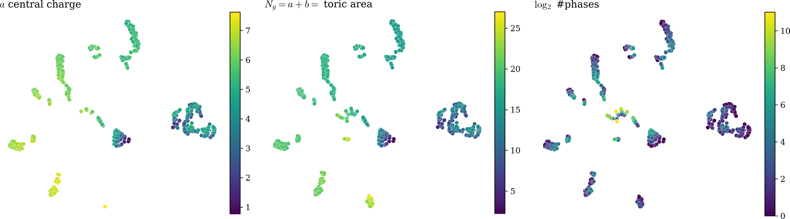

Actions and Intuition: Representation Theory via AI
AI for Mathematics (Physics) · Mathematics (Physics) for AI
Benjamin Suzzoni
UNIST — Ulsan National Institute of Science and Technology
Question: what hidden structure can ML help us identify?
→ unsupervised learning, explainable AI, …

label-free embedding, coloured by physics it was never shown
The textbook description of a QFT is the path integral
\[ \langle\mathcal{O}(x)\rangle = \int\mathcal{D}\phi\; e^{-S[\phi]}\, \mathcal{O}(x) \]
but the measure \(\mathcal{D}\phi\) is generally not well defined — it is shorthand for "integrate over all fields".
We can define it
Key idea: use the initialization distribution together with the UAT to integrate over all network configurations.
\[ \int\mathcal{D}\phi\; e^{-S[\phi]}\,\mathcal{O}(\phi(x)) \qquad\longleftrightarrow\qquad \lim_{N\to\infty}\int_{\Omega}\prod_i^N d\theta_i\, P(\theta_i)\,\mathcal{O}(\phi_\theta(x)) \]
Correlators come from the generating functional, now an ordinary expectation value:
\[ Z[J] = \lim_{N\to\infty}\int_{\Omega}\prod_i^N d\theta_i\, P(\theta_i)\; e^{\int dx\, J\phi_\theta} \] \[ \frac{\delta^2 Z[J]}{\delta J(x)\delta J(y)} = \mathbb{E}_{P(\theta)}\big[\phi_\theta(x)\phi_\theta(y)\big] = K(x,y) \]
A free scalar with propagator \(K\):
\[ S[\phi] = -\frac{1}{2}\int dx\,dy\; \phi(x)\, K^{-1}(x,y)\, \phi(y) \]
Two ways to switch on interactions:
Finite-\(N\) corrections
step back from the UAT limit
Break the UAT requirements
e.g. statistical dependence of the parameters
e.g. \(\phi^4\)-theory, as a deformation of \(P(\theta)\):
\[ P(\theta) \;\longrightarrow\; P(\theta)\, \exp\left(-\frac{\lambda}{4!}\int dx\; \phi_\theta^4(x)\right) \]
Choosing \(P(\theta)\) and \(\phi_\theta\) — hence \(K\) — engineers different QFTs; leaving the UAT limit switches on the interactions.
One of the goals: use the tools of QFT to study general ML setups: Physics for AI
Questions are always welcome — b.suzzoni@benterre.com